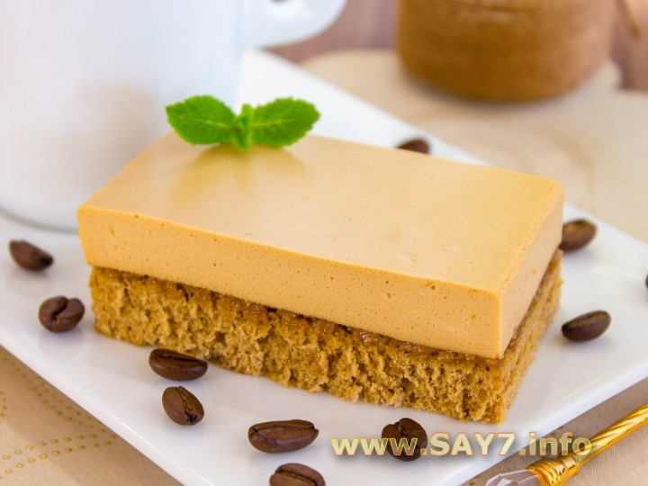

Кофейное пирожное
Это пирожное оценят в первую очередь любители кофе. Нежный бисквит идеально дополняет кофейное суфле. Очень вкусно!
Ингридиенты:

тесто:
3 яйца
150 г сахара
3 ч.л. растворимого кофе
100–150 г муки
суфле:
500 мл сливок 33–35%
5 ч.л. растворимого кофе
150 г сахара
20 г желатина
Приготовление
Готовим бисквит.
Кофе растворить в минимальном количестве горячей воды (2–3 ст.л.).
Остудить.
Яйца взбить с сахаром.
Добавить кофе, перемешать.
Добавить муку, аккуратно перемешать.
Форму (я использовала форму размером 20×30 см) смазать маслом или застелить бумагой для выпечки.
Выложить тесто.
Поставить в разогретую до 180 градусов духовку.
Выпекать в течение 10–15 минут.
Остудить.
Готовим суфле.
Желатин замочить в 100 мл холодной кипяченой воды и оставить на то время, которое указано на упаковке.
Желатин довести до кипения, но не кипятить.
Кофе растворить в 200 мл горячей воды.
Остудить.
Сливки взбить с сахаром.
Добавить кофе, перемешать.
Добавить желатин, перемешать.
На остывший корж выложить суфле.
Поставить в холодильник на 6–8 часов.
Готовый корж нарезать на прямоугольники, при помощи широкой лопатки достать из формы.